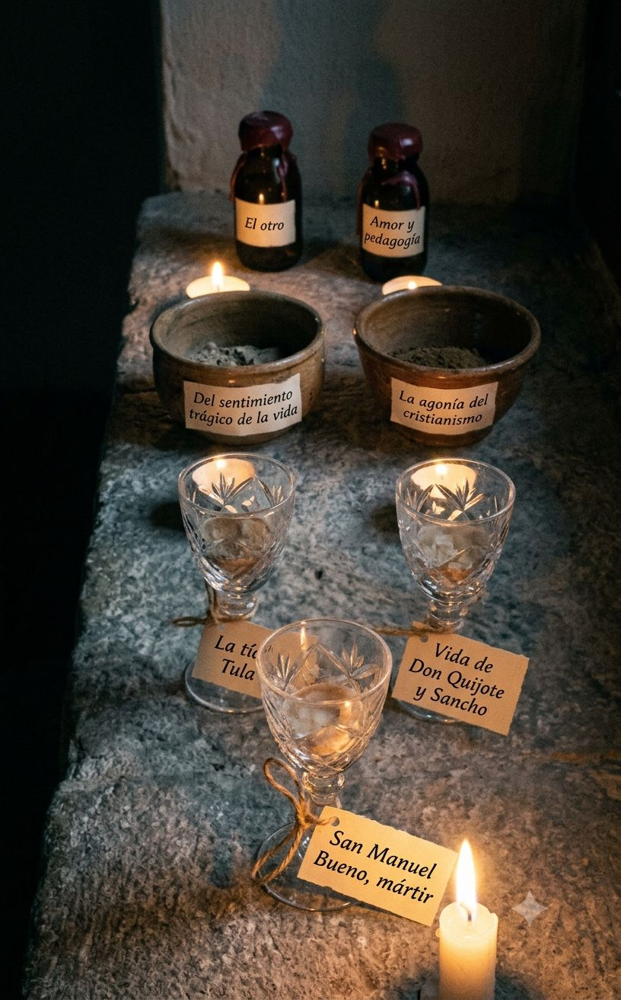

El hombre que más desconfió de la novela es quien más veces la reinventó para poder sangrar dentro de ella. Niebla, que finge no ser novela para que nadie le pida coherencia, queda más cerca del norte que cualquiera de sus tratados firmados como filosofía pura. Y el libro que debía ser su testamento razonado, Del sentimiento trágico de la vida, tropieza justo donde más se empeña en convencer. Al final, el cura que no cree y sigue oficiando dice, en menos páginas que todas las demás juntas, lo que el resto de la obra tardó cuarenta años en rodear.
NORTE ↑: la agonía genuina — el conflicto vivido, no argumentado, entre la fe que se desea y la razón que la corroe; el personaje, o el propio Unamuno, sosteniendo su contradicción sin resolverla y sin consuelo.
ESTE →: el juego formal — la nivola como ocurrencia ingeniosa, el truco metaliterario que entretiene sin arriesgar nada existencial.
SUR ↓: el sermón — la tesis que dicta en vez de sufrir, la doctrina disfrazada de historia, la voz que ya sabe la respuesta antes de empezar.
OESTE ←: la ambición desbordada — el ensayo que se dispersa, la digresión que sustituye la conmoción por acumulación de páginas.
Corpus operado: obras mayores de narrativa, ensayo y una muestra representativa de teatro y poesía. La producción periodística y epistolar, inabarcable, queda fuera; se declara la limitación.
Muestra: grano temprano, aún verde Posición en el eje: zona media, deriva hacia el oeste
Su primera novela, construida sobre la guerra carlista de su Bilbao natal, busca todavía el pulso entre crónica e intrahistoria sin encontrar del todo el punto de fuego. Cantera antes que cosecha: se guarda por lo que anuncia, no por lo que logra.
Muestra: ensayo fundacional, ambición sin sustento aún Posición en el eje: oeste
Cinco ensayos sobre la “intrahistoria” española que sientan el vocabulario de todo lo que vendrá, pero que razonan más de lo que agonizan. Se lee como preparación del alambique, no como destilado.
Muestra: sátira con esqueleto filosófico Posición en el eje: este
La crianza científica de un hijo condenado al fracaso por su propio padre positivista: ingenio afilado, pero el dolor queda subordinado a la burla del sistema. Divierte más de lo que quema; el este se paga con distancia.
Muestra: exégesis mística Posición en el eje: cerca del norte
Lee el Quijote como escritura sagrada y proyecta sobre él su propia hambre de inmortalidad: la agonía religiosa ya no se disimula. Entra al alambique disfrazado de comentario ajeno.
Muestra: tratado-confesión Posición en el eje: borde sur
Su libro más citado declara la agonía en vez de encarnarla: cuando más se acerca a la doctrina, más se aleja del pulso que anuncia en el título. El norte se nombra aquí; se habita en otras obras.
Muestra: grano de mayor densidad Posición en el eje: norte
Augusto Pérez discute su propia existencia con su autor y pierde. La nivola, lejos de ser truco vacío, convierte el juego formal en el arma misma de la agonía. Cima temprana: aquí el este y el norte dejan de ser opuestos.
Muestra: envidia destilada hasta el hueso Posición en el eje: norte
Reescribe Caín y Abel sin metáfora de distancia: la envidia como enfermedad incurable, sin redención ni ironía que la enfríe. Sentencia corta porque no la necesita: quema sin pedir permiso.
Muestra: miniaturas desiguales Posición en el eje: zona media, con picos al norte
El prólogo teoriza más de lo que las novelas necesitan; “Nada menos que todo un hombre” alcanza el norte, las otras dos rondan la zona media. Conjunto irregular: se cata por su mejor pieza, no por su promedio.
Muestra: maternidad sin cuerpo Posición en el eje: norte
Tula ejerce una maternidad total negándose al matrimonio y al deseo: la obsesión unamuniana por la carne y el espíritu encuentra aquí su forma más extrema y menos discursiva. Agonía sin un solo párrafo que la explique: por eso convence.
Muestra: ensayo tardío, filo desgastado por el uso Posición en el eje: cerca del norte, deriva al oeste
Escrito en el exilio, declara que el cristianismo vive precisamente de la lucha entre fe y duda que nunca cesa; el diagnóstico es certero, la prosa se dispersa. Sabe exactamente dónde está el fuego y aun así divaga alrededor.
Muestra: espejo que se mira mirarse Posición en el eje: frontera este-norte
El experimento metaliterario más radical del autor: no sabe si es ensayo, autobiografía o ficción, y esa indecisión es exactamente su tema. Roza el juego vacío pero cae del lado de la agonía porque el autor no sale ileso.
Muestra: el grano más puro de toda la cosecha Posición en el eje: norte, cima absoluta
Un cura que no cree en la resurrección sigue administrando los sacramentos para no quitarle a su pueblo el único consuelo que tiene. Ninguna tesis lo explica: la historia entera es la tesis, vuelta carne. Aquí el sistema no necesita juzgar: solo señalar.
Muestra: doble teatral, menos logrado que sus dobles narrativos Posición en el eje: este
El tema del doble —tan fértil en Abel Sánchez— se vuelve mecanismo escénico antes que herida; el artificio se nota más que en la prosa. El teatro le queda estrecho al agonista: necesita el narrador para respirar.
Muestra: diario en verso, irregular por diseño Posición en el eje: dispersa entre norte y oeste
Casi dos mil poemas escritos día a día durante el exilio y la vejez: sin filtro editorial, alterna destellos de agonía desnuda con anotación de circunstancia. No se cata como obra: se cata como pulso tomado a diario, algunos días con fiebre.
El testamento de Unamuno no es el tratado que firmó como tal, sino el cura que no creía y siguió oficiando: la ficción narra mejor la duda de lo que la duda se explica a sí misma. Del sentimiento trágico sorprende por su posición baja pese a su fama —declara el norte sin habitarlo—, mientras La tía Tula y Abel Sánchez, menos citadas, lo alcanzan sin una sola nota al pie. La ausencia notable es el fracaso limpio: hasta el grano más verde de este autor conserva un ascua. El conjunto revela a un hombre que necesitó treinta años y una decena de máscaras para decir, cada vez con menos palabras, la misma cosa.
Por qué este autor lo merece: Unamuno es Castilla seca antes que nada — su intrahistoria nace del páramo, no del salón.

Por qué este autor lo merece: la agonía de Unamuno es siempre religiosa aunque no siempre lo declare; un cura sin fe que sigue oficiando pide una luz de vela, no de laboratorio.
Por qué este autor lo merece: el doble —Augusto y su autor, Joaquín y Abel, el cura y su feligresía— es el mecanismo que atraviesa toda la obra; una superficie fracturada lo vuelve visible.